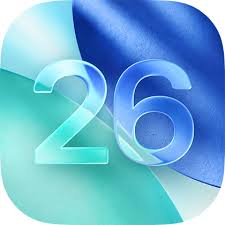

個人的に考えるios26の良い点と悪い点！
まずはいい点
・アニメーションがきれいになった（見た目の向上）
・ロック画面の編集が前よりもたくさんできるようになった
次に悪い点
・アニメーションの追加などで、iosの容量が増えた...
（自分が使っているのはSE第２世代６４GBだから結構きつい）
・新しいiphoneでのエラーが増えている...
悪い点は今後のアップデートで解消されていくと思うのでそこはお楽しみに...
と、言うわけで今回はios26の良い点と悪い点をお送りしました！
そいではさようなら～
■□■□■□■□■□■□■□■□■□■□■□■□■□■□■□■□■□■□■□■□■□■□■□■□■□■□■□■□■□■□■□■□■□■□■□■□■□■□■□■□■□■□■□■□■□■□■□
豆